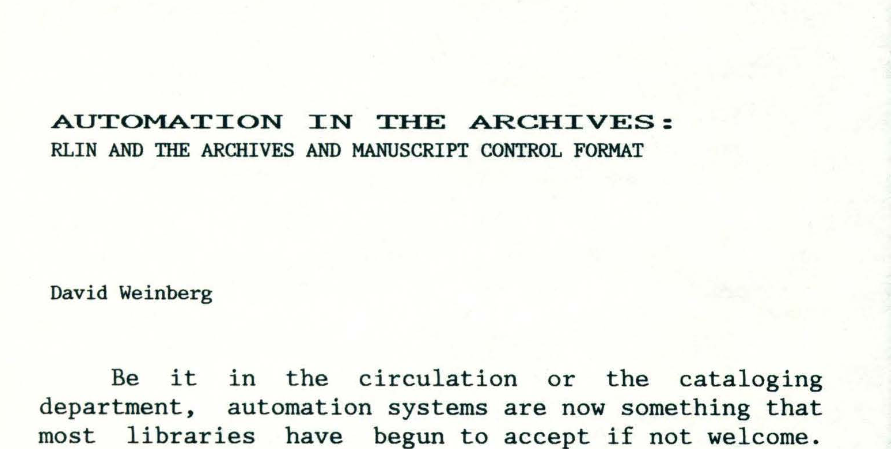
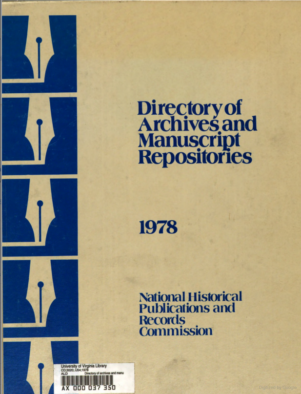
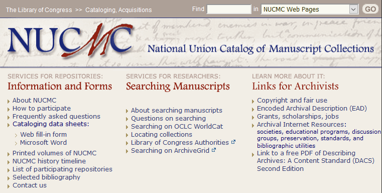
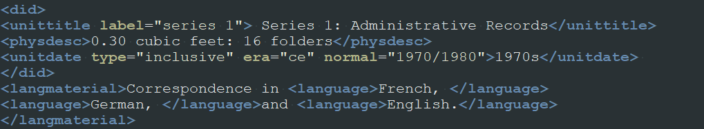

Gregory Wiedeman
University Archivist
University at Albany, SUNY



Will allow us to present description in different views, formats, outputs as they change over time
(These are usually data issues)

This is actually the first language example in the EAD tag library
{
"expression": "1927-2000",
"begin": "1927",
"end": "2000",
"date_type": "inclusive",
"label": "creation",
"jsonmodel_type": "date"
}
{
"number": "44.4",
"portion": "whole",
"extent_type": "cubic ft.",
"jsonmodel_type": "extent"
}
I wish it tried to do less and the URIs were an afterthought.

Gregory Wiedeman
University Archivist
University at Albany, SUNY